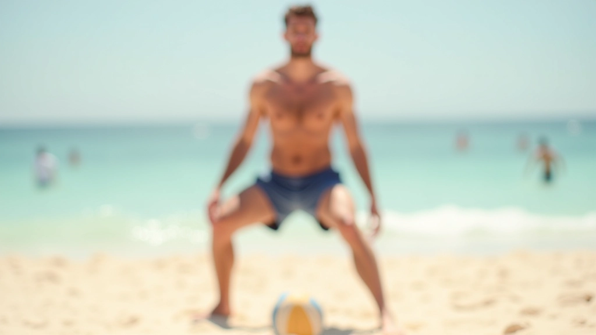
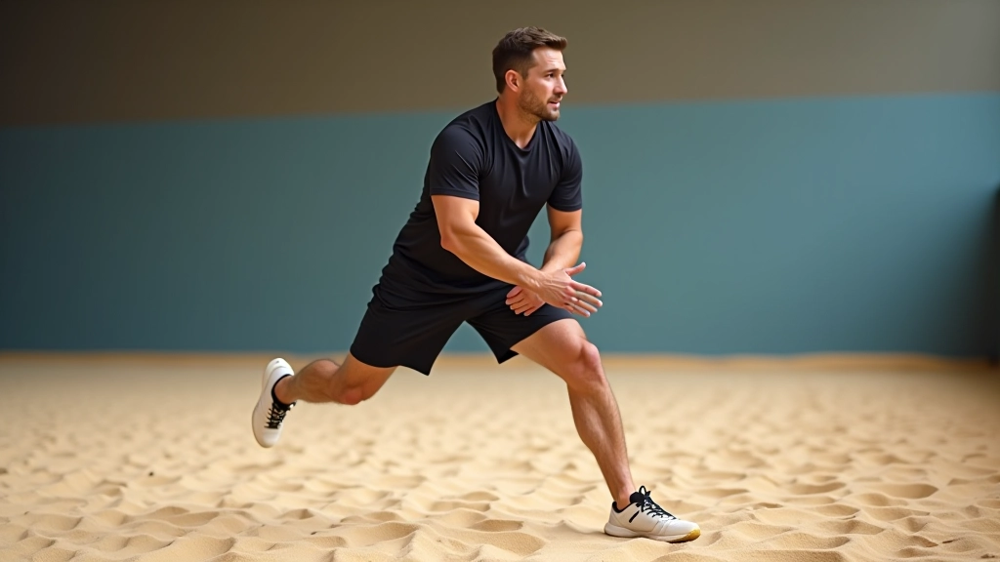
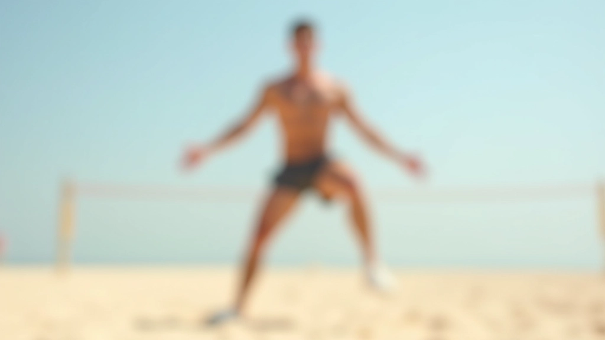
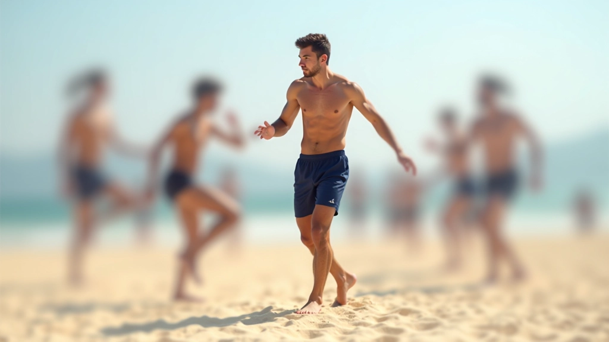

خطوات الحركة الأساسية للمبتدئين
تعرف على الطريقة الصحيحة للخطوة الأولى والحركات البطيئة التي تبني أساساً قوياً قبل الانتقال للحركات المتقدمة.
تعلم كيفية الوقوف بشكل صحيح وتطوير التوازن الذي تحتاجه للحركة السريعة والفعالة على الرمل. هذه الأساسيات ستغير طريقة لعبك تماماً.


كتبه
فريق المحتوى والمراجعة التحريري
متخصصون في توفير إرشادات عملية وموثوقة لتمارين حركة الرمل في الكرة الطائرة الشاطئية.
وضعية الاستعداد الصحيحة هي الأساس لكل حركة تقوم بها على الرمل. تبدأ من هنا. أرجلك، جسدك، عينيك — كل شيء يبدأ بالوقفة الصحيحة.
الكثير من اللاعبين الجدد يقفون بشكل خاطئ دون أن يدركوا ذلك. يعتقدون أنهم مستعدون للحركة، لكنهم في الحقيقة يقفون بطريقة تجعلهم بطيئين وغير متوازنين. النتيجة؟ ردود فعل أبطأ وحركات أقل دقة.
إذا تعلمت الوضعية الصحيحة الآن، فستلاحظ الفرق في أسبوعين أو ثلاثة. ستشعر بثقة أكبر، وستتمكن من التحرك أسرع، وستكون أكثر توازناً عندما تتلقى الكرة.


افصل بين قدميك بمسافة تساوي عرض أكتافك تقريباً. هذا يعطيك قاعدة ثابتة. لا تقف بقدمين متقاربتين — ستفقد التوازن. ولا تفصل بينهما كثيراً — ستصبح حركتك بطيئة.
انثنِ ركبتيك حوالي 15-20 درجة. ليس عميقاً جداً — فقط ما يكفي لتشعر بالتوتر في عضلات الفخذ. هذا الوضع يعطيك القدرة على الانفجار والحركة السريعة.
لا تقف مستقيماً تماماً. انحنِ قليلاً من الوركين بحيث يكون جسمك في وضعية هجومية. وزنك يجب أن يكون على مقدمة قدميك، ليس على الكعب.
ضع ذراعيك أمامك قليلاً، مثل وضعية الدفاع في كرة القدم. هذا يساعدك على الاستجابة السريعة وتحقيق التوازن أثناء الحركة.
الوضعية ليست مملة. هي المفتاح. لاعبو الكرة الطائرة الشاطئية الحقيقيون يعرفون أن كل شيء يبدأ من الأرض.
— مبدأ أساسي في الكرة الطائرة الشاطئية
الرمل يجعل التوازن أصعب من الملاعب الصلبة. قدماك تغوص قليلاً، والسطح غير مستقر. هذا في الواقع ميزة لك — إذا تعلمت كيفية التحكم فيه.
التوازن على الرمل يأتي من ثلاثة أشياء: قوة أساسية قوية، وضعية صحيحة، وممارسة مستمرة. ستشعر بعدم الاستقرار في البداية. هذا طبيعي تماماً.
نصيحة مهمة: مركز ثقلك يجب أن يكون فوق قدميك مباشرة. تخيل خطاً مستقيماً من رأسك إلى الأرض — هذا هو الموضع المثالي.


لا تحتاج إلى تمارين معقدة. البسيط يعمل بشكل أفضل. إليك ثلاثة تمارين يمكنك البدء بها اليوم:
افعل هذه التمارين ثلاث مرات في الأسبوع. ستشعر بالفرق في أسبوع واحد فقط.
إتقان الوضعية والتوازن ليس شيئاً تفعله مرة واحدة ثم تنساه. إنه شيء تعود إليه في كل ممارسة. كلما قضيت وقتاً أكثر في فهم جسدك وكيفية وقوفك، كلما أصبحت أفضل.
لا تتوقع أن تكون مثالياً من اليوم الأول. لكن إذا ركزت على الأساسيات — قدماك، ركبتاك، وزنك — فستلاحظ تحسناً حقيقياً. وهذا هو الهدف.
تذكر: الأساسيات القوية تعني حركات أفضل، واستجابة أسرع، ولعبة أقوى بشكل عام. استثمر الوقت الآن، واحصل على النتائج لاحقاً.
المعلومات المقدمة في هذه المقالة هي لأغراض تعليمية وإعلامية فقط. هذا الدليل مخصص لمساعدتك على فهم تقنيات الوضعية والتوازن في الكرة الطائرة الشاطئية. كل شخص مختلف، والظروف تختلف. إذا كنت تعاني من إصابة أو لديك قلق صحي، يُرجى استشارة متخصص قبل البدء بأي برنامج تمارين جديد. استمع دائماً إلى جسدك واتخذ فترات راحة عند الحاجة.
مقالات أخرى تكمل هذا الدليس
تعرف على الطريقة الصحيحة للخطوة الأولى والحركات البطيئة التي تبني أساساً قوياً قبل الانتقال للحركات المتقدمة.

طور سرعتك الجانبية مع تمارين عملية مصممة لتحسين ردود فعلك وحركتك على الرمل.

ارتقِ بمستواك من خلال تقنيات القفز المتقدمة والحركات الديناميكية للاعبين الجادين.